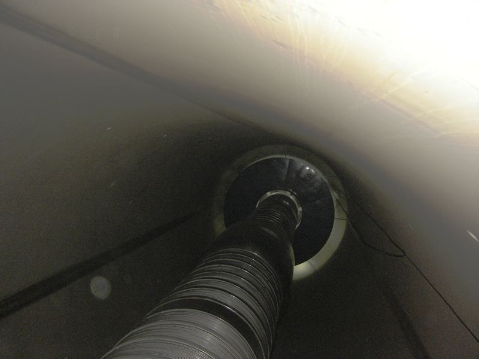

Contact us
We welcome students and young researchers who want to do theoretical physics. Write to any of us about the topic that interests you.
Undergraduate theses and internships
Final projects (tesis de licenciatura) and research internships for physics students.
PhD
PhD projects with CONICET or CNEA fellowships, enrolled at Argentine universities.
Postdocs
Postdoctoral positions through CONICET calls and joint projects.
Who to contact
- Quantum chaos and complex systems: Pablo D. Bergamasco, Gabriel G. Carlo, Leonardo Ermann, Alejandro M. F. Rivas, Pablo Sesin
- Hadronic physics and dense matter: Máximo Coppola, Sebastián A. Ferraris, María Florencia Izzo Villafañe
- Computational materials physics: Viviana P. Ramunni
Contact
General enquiries, Head of Department: Leonardo Ermann.

Laboratorio TANDAR, Edificio 42, Centro Atómico Constituyentes
Department of Theoretical Physics of Fundamental Interactions and Complex Systems
Gerencia de Investigación y Aplicaciones (GIyA) · Centro Atómico Constituyentes · CNEA
Av. General Paz 1499 (CP 1650), San Martín, Buenos Aires, Argentina